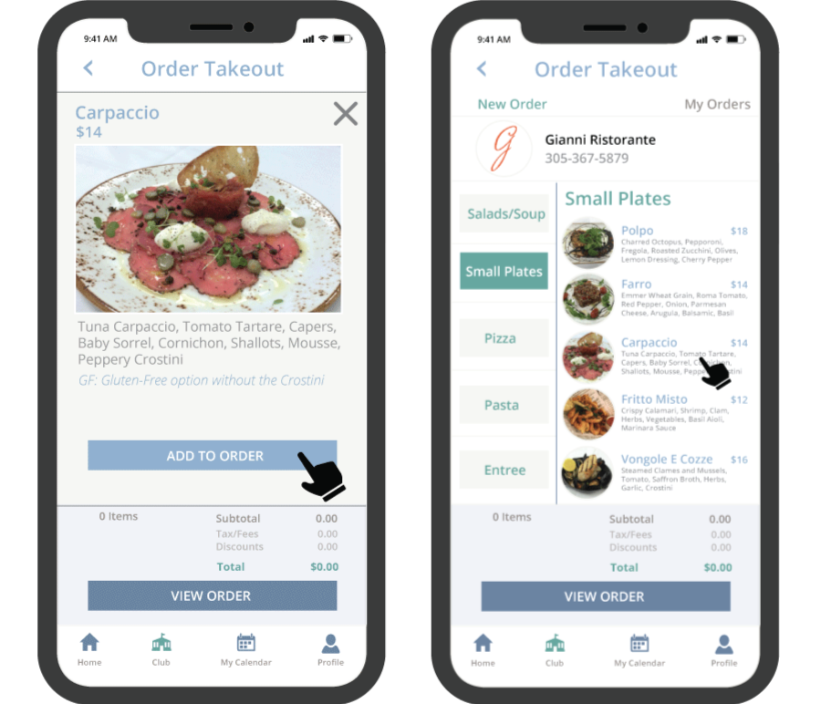

My Recent Projects
In the last 5 years, I had the unique opportunity in a UI/UX Designer role to develop a web and iOS software application that truly encompassed a variety of needs for a private club in the Florida Keys.
This 2,500-acre private club community includes a hospital, airport, hotel, marina, spa, three golf courses, more than 20 food and beverage operations, multiple retail outlets and many more amenities.
Our team consisted of only two designers. We were tasked with providing designs, workflows, wireframes, standards, and business analysis supporting 20-25 developers for more than 70 sprints.
We used the Agile methodology to develop our prototypes for more than 30 different systems/modules and more than 500 pages.
The Project Role included the business analysis, project
management, and UI/UX designs in the following areas:
- Accounts Receivable and Payable
- Purchasing & Procurement
- Membership Management
- Property Certificate Management
- Point of Sale iOS Development
- Task & Automated Workflow
- Vendor & Inventory Management
- Capital Project Management
Desktop

Home Dashboard Features
- Drag and Drop Widget & Tile Functionality
- Customizable Tiles: Text, Images, Attachments
- Quick Access to Active Records
- Access to Each Module Based on Permissions
- View Recently Accessed Records
- Customizable VIP Widget
- User Preferences & Settings
- Current Weather
- Global Access to Task Management
- System Notifications
- Ability to Search all Records/Accounts
- User's Personal To Do List
mobile
iPhone Features
- Amenities Information
- Reservation Management
- Online Restaurant Orders
- Account Notifications
- Special Events & Calendar Management
- Member Profile & User Management
- Account Balance Summary
- Transaction & Statement Details
ios tablet

Home Dashboard Features
- Home Dashboard
- Advanced Account Lookup
- Transaction Details
- Reservation Management
- Table Management
- Inventory Management
- Recipe Builder & Kitchen Management
- Settings & System Administration
My UI/Ux Process
Conducting User Research
Afer interviewing users and gathering additional requirements, the following problem statement was created:
As a User, I need to be able to quickly search for a Member record (or any other type of person record, employee, associate, group, etc) and be able to view a quick summary of that record.
Currently, a very basic Lookup screen is being used that only provides the most basic details of the record:

Users have requested the following information to be included in their Member Lookup search:
- Additional Person Information such as Marital Status, Date of Birth, Desired Prefix/Suffix, Profile Picture
- Record Classification Details such as Classification Type, Member Type Name & Number, Member Relation to the Primary Account holder, how long have they been members, additional add-on bundles for Golf, Spa, etc.
- Basic Contact information for the selected record including Primary Phone, Email, and Mailing address
- Ability to view all other records that are affiliated with the Club Membership, Spouse, Dependents, Employees, etc. and be able to easily navigate those details
- Detailed Account information including charge privileges and status of the account
- Easy Navigation from viewing the record details to other areas of the application
- A Printable version of the record details with clean UI
- Option to quickly access a member record from their home dashboard
Creating User Personas - Who is the User?
In this Case Study, the Member Lookup feature can be utilized by many different types of users:
- Front Desk Agent
- To find a phone number to contact the member about a reservation
- Restaurant Server
- To check the member is over 21 and is of legal drinking age
- Accounting Clerk
- To verify that the account has been suspended due to late payment of fees
- Membership Agent
- To ensure that a membership type has been added and basic contact info is updated
Because of the variety of users and the information they may be seeking, the new UI/UX of this feature will have to consider that some data may need to be hidden on default, as not everything on the record is pertinent to ALL users.
Designing User Flows and Wireframes


Creating Prototypes


Conduct User Testing & Secondary Iterations
After quality assurance and user testing, the following items were brought up for a follow-up iteration:

Testimonials
Jillienne Moreno is a remarkable professional Product Design Specialist and a talented UX Designer, analytic, and researcher. Together we developed an all-encompasing software application to run a private club in the Florida Keys. This system included accounting, point of sale, inventory, procurement, and membership management modules.
Jillienne was responsible for most of the communication with immediate future users of the system, as well as with us, the program developers. She has shown exceptional talent and in very difficult conditions she was able to develop incredibly convenient screen interfaces, including both business and functional requirements for the various system modules. I am very grateful to Jillienne for all her energy, knowledge, and professionalism she brought to the team to help launch this extraordinary system.
Jillienne Moreno is a results based designer with the know-how to collaborate and push projects forward in a fast-paced startup environment. Day after day, my iOS Development Team depended on her expertise to inform our development decisions and ensure a quality product that met the needs of both management and users.
I have worked with Jillienne for almost 4 years and she has always been meticulous with the design specifications for each of the user stories that we worked on. She is very versatile, from designing, quality assurance, to project management. She always comes up with beautiful UI workflows even from arduous business processes that we were trying to automate. Looking forward to working with her again!
Additional Work

In the course of 5 years, I was responsible for the UI/UX designs of more than 30 different
systems that were developed and "Encompassed" within one software application.
These systems included Accounts Receivable & Payable, Membership,
Purchasing & Procurement, Property Certificate, Capital Project Management, Vendor &
Inventory Management, Task & Automated Workflow Management, System Administration, Security
Roles, User Permissions, Basic Notifications, and Task Management.


During a year spent abroad in New Zealand, I used my expertise to redesign the promortional
materials used for a local motel in the small township of Fox Glacier.
This included business cards, brochures placed in tourism locations, and a revamped website.

Third Frate is a local band that was seeking promotional materials that emphasized them as a
cover band to acquire more gigs in the surrounding communities.
This included fliers that featured interviews with the individual band members and an
example of the music the band covered.

During my time spent at Specialty Finishing, my tasks included creating, modifying, editing,
and proofreading designs, files and packaging for print production.
I was also instructed on the ins and outs of preparing files for print production and
assisting with plate production in CMYK distributions.
a little about me . . .
I would love to tell you a little bit about myself and how my path has brought me to UI/UX Design.
Both my professional and personal experiences have molded me into the artist that exists today. Though I started out in print production, illustrations and packaging design, my travels around the world introduced me to the love of hospitality management.
I enjoy meeting new people and I care about making any employment opportunity a learning and growing experience. It did not take long for the creative side of me to embrace any chance to come out and play.
Whether it was designing brochures and marketing materials for a small motel in New Zealand, creating promotional boards for excursions on a cruise ship, or enhancing the day-to-day management tools at a private club in Key Largo, there was always an idea on how I can use my graphic design skills to improve the experience at every stop along my journey.
Fun Facts
- In 2012, I thru-hiked the entire 2,200 miles of the Appalachian Trail from Georgia to Maine.
- I spent 3 years working for the Cruiseline industry and travelling all over the Caribbean and Hawaiian islands.
- In college I gained valuable experience with magazine and newspaper production as the Photo Editor, Cartoon Editor, and Graphic & Layout Editor.
- I'm uniquely certified in Therapeutic Crisis Intervention (TCI), which helps children learn constructive ways to handle crisis.
- I've enjoyed multiple trekking trips in New Zealand, Chile, Peru, and the United States.
- Out of 900 associates, I was a manager of the Quarter nominee on four separate occasions.